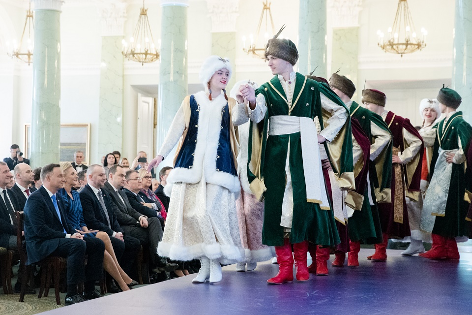

Polacy z Baru z wizytą w Pałacu Prezydenckim
W dniach 5 – 7 marca 2018 roku delegacja z Domu Polskiego w Barze miała zaszczyt gościć w Warszawie na zaproszenie Kancelarii Prezydenta RP Andrzeja Dudy w ramach podsumowania Roku Akcji Pomocy Polakom na Wschodzie. Oprócz grupy z Baru do Warszawy zaproszeni zostali również Polacy z Czerniowiec, Starej Huty, Dołbysza, Romanowa, jak również przedstawiciele Polonii z Rumunii (Nowy Sołoniec) i Mołdawii (Bielce).
Niemal każda grupa miała swoich reprezentantów w postaci zespołów artystycznych. Z Baru na spotkanie z parą prezydencką wyjechał – wraz z choreografem panią Inną Miedwiediewą – folklorystyczny zespół taneczny „Aksamitki”, który wykonał pięknego, dostojnego poloneza inaugurującego koncert w Pałacu Prezydenckim.
Koncert prowadziła znana polska prezenterka telewizyjna – Anna Popek. Na sali znaleźli się między innymi : prezydent RP Andrzej Duda z małżonką Agatą Kornhauzer Dudą, minister Adam Kwiatkowski reprezentujący Biuro do spraw Kontaktów z Polakami za Granicą, ministrowie Kancelarii Prezydenta , przedstawiciele Parlamentu, posłowie na Sejm, szefowie Kancelarii Sejmu i Senatu, ambasador Mołdawii, konsulowie Winnicy, Lwowa i Kiszyniowa, przedstawiciele mediów, partnerzy akcji – instytucje, spółki i osoby prywatne, duchowieństwo, goście z Ukrainy, Rumunii, Mołdawii, opiekunowie chórów i członkowie zespołów.
Przebieg i charakter koncertu w pełni potwierdził słowa prowadzącej : „Polacy na Kresach to żywa tkanka, to pulsująca energią, tańcem i radością życia społeczność, która potrafi wykorzystać każdą okazję, by spotkać się, celebrować święta, tańczyć i bawić się”.
Koncert składał się bowiem z prezentacji artystycznych o bardzo zróżnicowanym charakterze. Obok żywiołowych wystąpień pokazujących folklor polski, rumuński czy mołdawski pojawiła się również grupa młodzieżowa tańcząca breakdance.
W przerwach między występami zabrali głos prezesi organizacji oraz dyrektorzy polskich placówek działających na Ukrainie, w Rumunii i Mołdawii. Ze strony Baru głos zabrała pani Małgorzata Miedwiediewa, która mówiła między innymi na temat przypadającej w bieżącym roku 250-tej rocznicy zawiązania Konfederacji Barskiej, oraz o obecności Baru w twórczości Juliusza Słowackiego i Henryka Sienkiewicza. Ze sceny padły również słowa podziękowania pod adresem Stowarzyszenia „Wspólnota Polska” oraz Konsulatu Generalnego w Winnicy za wspieranie działalności artystycznej Domu Polskiego.
Prezydent RP Andrzej Duda oraz jego małżonka, w swoich wystąpieniach przybliżyli zakres, cel i charakter Akcji Pomocy Polakom na Wschodzie. Z dużą wdzięcznością, sympatią i wzruszeniem mówili na temat ludzi działających na rzecz upowszechniania języka polskiego i polskiej kultury, oraz o tych, którzy nie zapominają o korzeniach i pielęgnują polskość w swoich rodzinach.
Spotkanie upłynęło w bardzo miłej, nieskrępowanej atmosferze. Para prezydencka znalazła czas na zrobienie sobie z uczestnikami spotkania pamiątkowych zdjęć. Prezydent był wręcz oblegany przez dzieci i młodzież. Każde z nich miało okazję zrobić sobie selfie z głową Państwa Polskiego.
W czasie dwudniowego pobytu w Pałacu Prezydenckim spotkaliśmy się ze szczególną życzliwością, sympatią i bezpośredniością ze strony osób odpowiedzialnych za przygotowanie tej wyjątkowej wizyty, za co serdecznie dziękujemy.